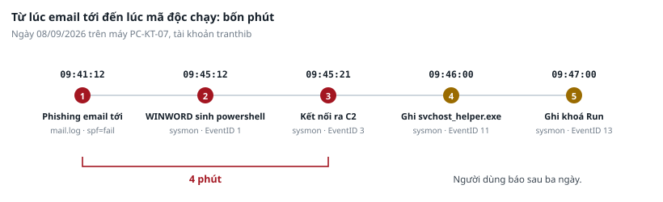
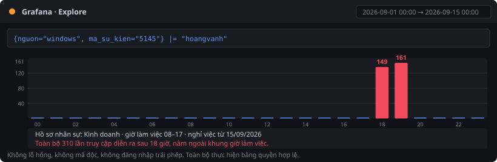
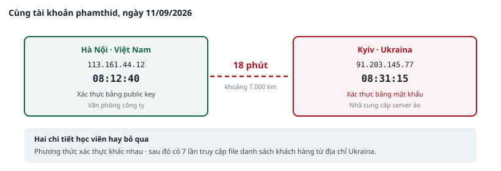
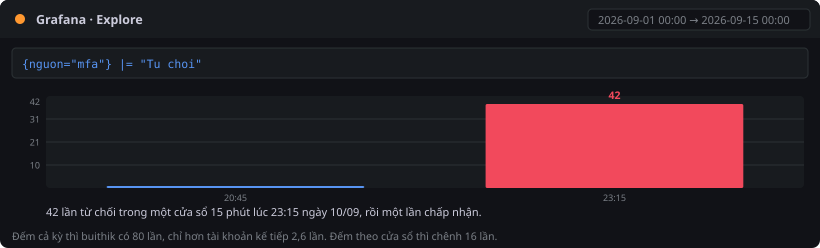
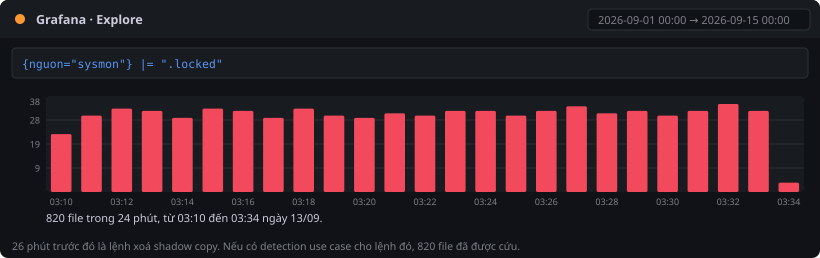

PHẦN K · MƯỜI BÀI TÌNH HUỐNG TIẾP THEO#
Nhóm 1 — Bốn bài khai thác dữ liệu đã có#
TH-7 · Kế toán báo máy tính chạy chậm#
Tình huống#
Sáng thứ Sáu ngày 11 tháng 9, chị Trần Thị Bình ở bộ phận kế toán gọi cho bộ phận hỗ trợ. Chị nói máy tính chạy chậm từ vài hôm nay, và hôm thứ Ba có mở một file hoá đơn gửi qua email nhưng file không mở được.
Phiếu hỗ trợ được chuyển sang bạn vì bộ phận hỗ trợ thấy tên file lạ.
Câu hỏi phải trả lời#
- Email đó đến từ đâu, vào lúc nào, và có dấu hiệu giả mạo nào không?
- Sau khi file được mở, process nào đã chạy? Mất bao lâu kể từ lúc thư tới?
- Process đó đã làm những gì trên máy?
- Sự việc này có liên quan gì tới các máy khác không?
Mục tiêu kỹ năng#
Lần theo một chuỗi sự việc từ email sang process sang kết nối mạng, sử dụng ba nguồn log khác nhau.
Cách đi tới câu trả lời#
Bước 1 — Tìm email đáng ngờ
cd ~/lab/dulieu
# Thư có xác thực người gửi thất bại
grep "spf=fail" mail.log | head -3
Chú ý ba điểm trong mỗi dòng: địa chỉ server gửi, tên miền người gửi, và tên file đính kèm.
# So sánh tên miền người gửi với tên miền thật của công ty
grep "spf=fail" mail.log | grep -oP 'from=<\K[^>]+' | sort -u
grep -v "spf=fail" mail.log | head -1
Bước 2 — Tìm process chạy sau khi file được mở
# Process do phần mềm văn phòng sinh ra
jq -r 'select(.EventID==1 and (.ParentImage|test("WINWORD|EXCEL")))
| "\(.TimeCreated) \(.Computer) \(.User)"' sysmon.ndjson
Nếu không dùng được jq:
python3 ~/lab/congcu/logq.py sysmon.ndjson --loc EventID=1 \
--lay TimeCreated,Computer,ParentImage | grep WINWORD
Bước 3 — Xem process đó đã làm gì
# Toàn bộ sự kiện trên máy PC-KT-07 trong khung giờ đó
jq -r 'select(.Computer=="PC-KT-07" and (.TimeCreated|startswith("2026-09-08T09:4")))
| "\(.TimeCreated) ID=\(.EventID) \(.Image // .TargetFilename // .TargetObject)"' \
sysmon.ndjson
Chú ý ba loại sự kiện: mã số 3 là kết nối mạng, mã số 11 là tạo file, mã số 13 là ghi vào sổ đăng ký.
Bước 4 — Kiểm tra máy khác có bị ảnh hưởng không
# Dịch vụ bảo vệ đầu cuối bị dừng trên máy nào
jq -r 'select(.EventID==7045) | "\(.TimeCreated) \(.Computer)"' \
windows_security.ndjson
Kết quả mong đợi#
| Nội dung | Kết quả đúng |
|---|---|
| Phishing | 6 thư lúc 08/09 09:41, từ 45.146.164.88, tên miền người gửi là minhan-vn.com chứ không phải minhan.vn, đính kèm file HoaDon_092026.docm |
| Process sinh ra | powershell.exe với tham số bỏ qua chính sách thực thi và ẩn cửa sổ, lúc 09:45:12, tức 4 phút sau khi thư tới |
| Hành vi | Kết nối ra 198.51.100.23, tạo file svchost_helper.exe trong folder người dùng, ghi khoá khởi động tự động vào sổ đăng ký |
| Lan rộng | Ngày 12/09 dịch vụ EDR bị dừng trên ba máy: PC-KT-07, PC-KD-12, SRV-FILE-01 |
Điểm cần nhớ. Khoảng cách từ lúc thư tới đến lúc malware chạy là bốn phút. Mọi biện pháp phát hiện dựa vào việc người dùng báo cáo đều quá muộn. Ở đây người dùng báo sau ba ngày.
Phiếu ghi nhận TH-7#
Làm bài ngay tại đây · Phiếu ghi nhận TH-7
| Câu hỏi | Trả lời |
|---|---|
| Tên miền người gửi và tên miền thật của công ty | |
| Kết quả xác thực người gửi | |
| Thời điểm thư tới và thời điểm malware chạy | |
| Khoảng cách giữa hai mốc | |
| Ba hành vi của process | |
| Các máy bị ảnh hưởng về sau |

TH-8 · Nhân sự hỏi về một nhân viên sắp nghỉ#
Tình huống#
Bộ phận nhân sự gửi thư cho bạn. Anh Hoàng Văn Hải ở bộ phận kinh doanh sẽ nghỉ việc từ ngày 15 tháng 9. Theo quy trình, bộ phận nhân sự đề nghị kỹ thuật rà soát quyền truy cập trước khi thu hồi tài khoản.
Đây là một yêu cầu hành chính thông thường. Nhưng khi rà soát, bạn nên xem cả hoạt động gần đây, không chỉ xem danh sách quyền.
Câu hỏi phải trả lời#
- Tài khoản này có hoạt động bất thường nào trong hai tuần qua không?
- Hoạt động đó diễn ra vào thời điểm nào so với giờ làm việc theo hồ sơ?
- Khối lượng dữ liệu liên quan là bao nhiêu?
- Hành vi này có vi phạm quy định nào không, và bạn đề xuất xử lý thế nào?
Mục tiêu kỹ năng#
Phát hiện hành vi rủi ro thực hiện hoàn toàn bằng quyền hợp lệ, không có lỗ hổng nào bị khai thác và không có malware nào.
Cách đi tới câu trả lời#
Bước 1 — Tra hồ sơ trước khi xem log
grep "hoangvanh" danh_sach_nhan_su.csv
Ghi lại ba thông tin: bộ phận, trạng thái, giờ làm việc.
Bước 2 — Tìm hoạt động truy cập file chia sẻ
# Mã sự kiện 5145 là kiểm tra quyền truy cập file trên folder chia sẻ
jq -r 'select(.EventID==5145 and .TargetUserName=="hoangvanh")
| .TimeCreated[0:13]' windows_security.ndjson \
| sort | uniq -c | sort -rn | head -5
Bước 3 — Đối chiếu với giờ làm việc
Đọc cột giờ trong kết quả bước 2. So với khung giờ ghi trong hồ sơ nhân sự.
# Xem chi tiết vài dòng để biết file nào bị truy cập
jq -r 'select(.EventID==5145 and .TargetUserName=="hoangvanh")
| "\(.TimeCreated) \(.ShareName) \(.RelativeTargetName)"' \
windows_security.ndjson | head -5
Bước 4 — Tính khối lượng dữ liệu thật sự đã tải về
Log Windows chỉ ghi việc kiểm tra quyền, không ghi khối lượng. Phải dùng netflow.csv. Workstation của người này là 192.168.10.35, server file là 192.168.10.21.
awk -F',' 'NR>1 && $3=="192.168.10.35" && $4=="192.168.10.21" \
{n++; b+=$10} END {printf "%d phien, %.2f GB tai ve\n", n, b/1073741824}' \
netflow.csv
Kết quả mong đợi#
| Nội dung | Kết quả đúng |
|---|---|
| Hồ sơ nhân sự | Bộ phận Kinh doanh, nghỉ việc từ 15/09/2026, giờ làm việc 08–17 |
| Hoạt động bất thường | 310 lần truy cập file chia sẻ trong ngày 10/09, bắt đầu từ 18:35 |
| So với giờ làm việc | Toàn bộ diễn ra sau 18 giờ, nằm ngoài khung giờ làm việc |
| Khối lượng | 46 phiên kết nối, khoảng 5,4 GB tải về từ server file |
| File bị truy cập | Folder KinhDoanh, các file báo giá và hợp đồng |
Điểm cần nhớ. Không có lỗ hổng nào bị khai thác, không có malware nào, không có lần đăng nhập trái phép nào. Toàn bộ thực hiện bằng quyền hợp lệ. Chỉ phát hiện được bằng cách đối chiếu ba yếu tố: khối lượng bất thường, thời điểm ngoài giờ, và trạng thái nhân sự sắp nghỉ việc.
Phiếu ghi nhận TH-8#
Làm bài ngay tại đây · Phiếu ghi nhận TH-8
| Câu hỏi | Trả lời |
|---|---|
| Giờ làm việc theo hồ sơ | |
| Số lần truy cập file và ngày | |
| Khung giờ thực tế | |
| Số phiên và khối lượng tải về | |
| Có vi phạm quy định nào không | |
| Ba việc đề xuất xử lý |

TH-9 · Rà soát quy tắc firewall quý 3#
Tình huống#
Theo lịch, quý 3 phải rà soát toàn bộ quy tắc firewall. Phiếu thay đổi TD-2026-086 đã được lập ngày 13 tháng 9 nhưng đang chờ duyệt.
Trưởng bộ phận giao bạn chuẩn bị số liệu cho buổi rà soát: liệt kê các cổng dịch vụ hiện đang mở ra Internet, và đối chiếu từng cổng với phiếu thay đổi đã phê duyệt.
Câu hỏi phải trả lời#
- Những cổng dịch vụ nào đang nhận kết nối từ Internet?
- Cổng nào có phiếu thay đổi tương ứng, cổng nào không?
- Với cổng không có phiếu, kết nối đầu tiên xuất hiện khi nào?
- Có dấu vết nào cho thấy ai đã thực hiện thay đổi đó không?
Mục tiêu kỹ năng#
Đối chiếu trạng thái kỹ thuật thực tế với hồ sơ quản lý, và truy ngược thời điểm một thay đổi không được ghi nhận.
Cách đi tới câu trả lời#
Bước 1 — Liệt kê các cổng đang nhận kết nối từ Internet
Giao diện em0 là hướng Internet. Trường 7 là hành động, trường 22 là cổng đích.
awk -F',' '$5=="em0" && $7=="pass" {print $22}' pfsense_filterlog.log \
| sort -n | uniq -c | sort -rn
Bước 2 — Đối chiếu với change record
column -s, -t ho_so_thay_doi.csv
Đọc kỹ cột nội dung. Phiếu nào nhắc tới việc mở cổng?
Bước 3 — Tìm kết nối đầu tiên tới cổng không có phiếu
awk -F',' '$22=="8443" {print $1, $2, $3; exit}' pfsense_filterlog.log
awk -F',' '$22=="8443" {n++} END {print "Tong so ket noi:", n}' pfsense_filterlog.log
Bước 4 — Tìm dấu vết thao tác sửa quy tắc
grep "thaydoi_tuonglua" audit.log
Chú ý trường auid, đó là định danh của người thực hiện.
Kết quả mong đợi#
| Nội dung | Kết quả đúng |
|---|---|
| Cổng đang mở ra Internet | Ba cổng: 443 với khoảng 46.640 kết nối, 8443 với 739 kết nối, và 22 với 300 kết nối |
| Cổng 22 | 300 kết nối dồn vào tối 01/09. Đây chính là đợt brute force ở bài TH-2. Cổng truy cập từ xa không nên mở trực tiếp ra Internet |
| Phiếu thay đổi | Sáu phiếu trong kỳ, không phiếu nào nhắc tới việc mở cổng 8443 |
| Kết nối đầu tiên tới cổng 8443 | Ngày 07/09 lúc 16:12 |
| Dấu vết sửa quy tắc | Một bản ghi trong log kiểm toán, cùng ngày 07/09 lúc 16:12, do định danh 1002 thực hiện |
Điểm cần nhớ. Một configuration drift không có change record tương ứng có hai khả năng: hoặc đội kỹ thuật bỏ qua quy trình, hoặc hệ thống đã bị xâm nhập. Cả hai đều phải điều tra. Không được mặc định là khả năng thứ nhất.
Phiếu ghi nhận TH-9#
Làm bài ngay tại đây · Phiếu ghi nhận TH-9
| # | Cổng | Số kết nối | Có phiếu thay đổi | Kết nối đầu tiên | Kết luận |
|---|---|---|---|---|---|
| 1 | |||||
| 2 |
TH-10 · Báo cáo backup thất bại#
Tình huống#
Sáng thứ Hai ngày 14 tháng 9, hệ thống backup gửi báo cáo tự động. Trong báo cáo có chín công việc backup thất bại vào đêm 13 tháng 9, tất cả cùng một lý do là storage bị khoá.
Quản trị viên hệ thống định mở phiếu sự cố kỹ thuật thông thường. Bạn được đề nghị xem qua trước.
Câu hỏi phải trả lời#
- Backup thất bại vào lúc nào, bao nhiêu công việc?
- Trước thời điểm đó có sự việc nào trên server file không?
- Nếu có, sự việc đó có ý nghĩa gì đối với khả năng khôi phục của tổ chức?
- Bạn xếp sự việc này ở mức ưu tiên nào? Vì sao?
Mục tiêu kỹ năng#
Nhận ra dấu hiệu chuẩn bị cho một cuộc tấn công ransomware, trước khi việc mã hoá xảy ra.
Cách đi tới câu trả lời#
Bước 1 — Xác định thời điểm backup thất bại
grep "JOB FAILED" auth.log
Bước 2 — Tìm sự việc trên server file trước thời điểm đó
# Các process được tạo trên server file trong đêm 13/09
jq -r 'select(.EventID==4688 and .Computer=="SRV-FILE-01")
| "\(.TimeCreated) \(.TargetUserName) \(.CommandLine)"' \
windows_security.ndjson
Bước 3 — Tra ý nghĩa của lệnh tìm được
Lệnh vssadmin delete shadows /all /quiet xoá toàn bộ shadow copy của hệ điều hành. Shadow copy là cơ chế cho phép khôi phục phiên bản trước của file mà không cần dùng tới bản backup.
Bước 4 — Kiểm tra tài khoản thực hiện
grep "svc_backup2" danh_sach_nhan_su.csv
grep -E "new user|to group" auth.log
Kết quả mong đợi#
| Nội dung | Kết quả đúng |
|---|---|
| Backup thất bại | 9 công việc, bắt đầu từ 02:44 ngày 13/09 |
| Sự việc trước đó | Lúc 02:44 cùng ngày, lệnh vssadmin.exe delete shadows /all /quiet được chạy trên SRV-FILE-01 |
| Tài khoản thực hiện | svc_backup2, không có trong danh sách nhân sự, chính là tài khoản được tạo ngoài quy trình ngày 03/09 |
| Ý nghĩa | Kẻ tấn công đang xoá khả năng khôi phục của tổ chức. Đây là bước chuẩn bị, không phải sự cố kỹ thuật |
Điểm cần nhớ. Đây là dấu hiệu chuẩn bị cho tấn công ransomware. Kẻ tấn công xoá khả năng khôi phục trước khi mã hoá. Nếu phát hiện được ở thời điểm này thì còn kịp ngăn chặn. Xếp sự việc này ở mức nghiêm trọng nhất, không xếp ở mức sự cố kỹ thuật thông thường.
Phiếu ghi nhận TH-10#
Làm bài ngay tại đây · Phiếu ghi nhận TH-10
| Câu hỏi | Trả lời |
|---|---|
| Số công việc backup thất bại và thời điểm | |
| Lệnh được chạy trước đó và thời điểm | |
| Tài khoản thực hiện | |
| Tài khoản này có trong hồ sơ nhân sự không | |
| Mức ưu tiên bạn xếp và lý do | |
| Ba việc cần làm ngay |
Nhóm 2 — Sáu bài trên dữ liệu mới#
TH-11 · Cùng một tài khoản, hai nơi cách nhau nửa vòng Trái Đất#
Tình huống#
Hệ thống không có cảnh báo nào. Bạn đang làm công việc rà soát định kỳ hằng tuần: xem lại các lần đăng nhập từ bên ngoài mạng công ty trong tuần qua.
Câu hỏi phải trả lời#
- Tài khoản nào đăng nhập từ hai địa chỉ khác nhau trong cùng một ngày?
- Hai địa chỉ đó thuộc quốc gia nào? Cách nhau bao nhiêu thời gian?
- Việc này có thể là bình thường không? Nếu không, vì sao?
- Sau lần đăng nhập thứ hai, tài khoản đó đã làm gì?
Mục tiêu kỹ năng#
Làm giàu dữ liệu log bằng bảng tra bên ngoài, và nhận ra loại bất thường chỉ thấy được khi kết hợp hai bản ghi với nhau.
Cách đi tới câu trả lời#
Bước 1 — Liệt kê các lần đăng nhập thành công theo tài khoản và địa chỉ
grep "Accepted" auth.log \
| grep -oP 'for \K\w+(?= from [0-9.]+)|from \K[0-9.]+' \
| paste - - | sort | uniq -c | sort -rn | head -20
Cách đơn giản hơn, xem theo từng ngày:
grep "Accepted" auth.log | awk '{
for(i=1;i<=NF;i++){ if($i=="for") u=$(i+1); if($i=="from") ip=$(i+1) }
print $1" "$2" "u" "ip }' | sort | uniq | awk '{print $1" "$2" "$3}' \
| sort | uniq -c | awk '$1>1'
Bước 2 — Xem chi tiết tài khoản có hai địa chỉ
grep "Accepted" auth.log | grep "phamthid"
Bước 3 — Tra quốc gia của hai địa chỉ
column -s, -t dia_chi_quoc_gia.csv
Đối chiếu hai địa chỉ tìm được với cột dải địa chỉ.
Bước 4 — Xem hoạt động sau lần đăng nhập thứ hai
jq -r 'select(.TargetUserName=="phamthid" and .EventID==5145)
| "\(.TimeCreated) \(.IpAddress) \(.RelativeTargetName)"' \
windows_security.ndjson
Kết quả mong đợi#
| Nội dung | Kết quả đúng |
|---|---|
| Tài khoản | phamthid, ngày 11/09 |
| Địa chỉ thứ nhất | 113.161.44.12 lúc 08:12:40 — Việt Nam, Hà Nội, văn phòng công ty |
| Địa chỉ thứ hai | 91.203.145.77 lúc 08:31:15 — Ukraina, Kyiv, nhà cung cấp server ảo |
| Khoảng cách | 18 phút 35 giây |
| Hoạt động sau đó | 7 lần truy cập file danh sách khách hàng từ địa chỉ ở Ukraina |
Điểm cần nhớ. Không ai di chuyển từ Hà Nội sang Kyiv trong 18 phút. Một trong hai lần đăng nhập không phải do chủ tài khoản thực hiện. Phương thức xác thực cũng khác nhau: lần thứ nhất dùng khoá, lần thứ hai dùng mật khẩu. Đây là detection use case phổ biến nhất trên hệ thống cloud, và chỉ phát hiện được khi ghép hai bản ghi cùng tài khoản lại với nhau.
Phiếu ghi nhận TH-11#
Làm bài ngay tại đây · Phiếu ghi nhận TH-11
| Câu hỏi | Trả lời |
|---|---|
| Tài khoản và ngày | |
| Địa chỉ, thời điểm, quốc gia của lần thứ nhất | |
| Địa chỉ, thời điểm, quốc gia của lần thứ hai | |
| Khoảng cách thời gian | |
| Phương thức xác thực của mỗi lần | |
| Hoạt động sau lần đăng nhập thứ hai |

TH-12 · Nhân viên kế toán mất ngủ vì điện thoại#
Tình huống#
Sáng ngày 11 tháng 9, chị Bùi Thị Kim ở bộ phận kế toán phàn nàn với đồng nghiệp rằng đêm qua điện thoại rung liên tục vì ứng dụng xác thực, chị bực quá nên bấm chấp nhận cho nó im.
Câu chuyện này đến tai bạn qua một đồng nghiệp, không qua kênh báo cáo chính thức.
Câu hỏi phải trả lời#
- Tài khoản này nhận bao nhiêu yêu cầu xác thực bị từ chối trong hai tuần qua?
- Nếu xếp hạng theo cả kỳ, tài khoản này có nổi bật không?
- Đếm theo cửa sổ mười lăm phút thì kết quả khác thế nào?
- Yêu cầu xác thực đến từ địa chỉ nào, thuộc quốc gia nào?
- Sau khi chị bấm chấp nhận, chuyện gì xảy ra?
Mục tiêu kỹ năng#
Nhận ra rằng đếm trên toàn kỳ che mất hành vi dồn dập, và làm quen với nguồn log MFA.
Cách đi tới câu trả lời#
Bước 1 — Xem cấu trúc file log xác thực
head -3 mfa.log
Sáu cột: thời điểm, tài khoản, địa chỉ nguồn, phương thức, kết quả, ứng dụng.
Bước 2 — Cách làm thường gặp: đếm từ chối trên cả kỳ
awk -F',' 'NR>1 && $5=="Tu choi" {n[$2]++} \
END {for (i in n) printf " %-12s %3d\n", i, n[i]}' mfa.log \
| sort -k2 -rn | head -5
Bước 3 — Cách làm đúng: đếm theo cửa sổ mười lăm phút
awk -F',' 'NR>1 && $5=="Tu choi" \
{ cua_so = substr($1,1,15)"0"; n[$2" "cua_so]++ } \
END {for (i in n) printf " %3d %s\n", n[i], i}' mfa.log \
| sort -rn | head -5
Bước 4 — Tra địa chỉ nguồn
awk -F',' '$2=="buithik" && $5=="Tu choi" {print $3}' mfa.log | sort -u
grep "91.203.145" dia_chi_quoc_gia.csv
Bước 5 — Tìm việc xảy ra sau lần chấp nhận
awk -F',' '$2=="buithik" && $5=="Chap nhan" && $3=="91.203.145.77"' mfa.log
grep "buithik" auth.log | grep Accepted
Kết quả mong đợi#
| Cách làm | Kết quả |
|---|---|
| Đếm cả kỳ | buithik có 80 lần từ chối, tài khoản kế tiếp có 31 lần. Có nhỉnh hơn nhưng không đủ rõ để kết luận |
| Đếm theo 15 phút | 33 lần từ chối trong một cửa sổ duy nhất lúc 23:20 ngày 10/09. Cửa sổ đứng thứ hai chỉ có 2 lần. Chênh lệch 16 lần |
| Địa chỉ nguồn | 91.203.145.77 — Ukraina, Kyiv |
| Khung thời gian | 23:18 đến 23:28 ngày 10/09, tổng 43 yêu cầu trong khoảng 11 phút |
| Sau khi chấp nhận | Có một lần đăng nhập thành công vào cổng truy cập từ xa, cùng địa chỉ đó |
Điểm cần nhớ. Kỹ thuật này dựa vào việc người dùng mệt mỏi và bấm chấp nhận để dừng thông báo. Biện pháp đối ứng không nằm ở chỗ đào tạo người dùng kiên nhẫn hơn, mà nằm ở chỗ đổi phương thức xác thực sang cách yêu cầu người dùng nhập một mã số hiển thị trên màn hình, và giới hạn số lần gửi yêu cầu trong một khoảng thời gian.
Phiếu ghi nhận TH-12#
Làm bài ngay tại đây · Phiếu ghi nhận TH-12
| Câu hỏi | Trả lời |
|---|---|
| Số từ chối khi đếm cả kỳ, và thứ hạng | |
| Số từ chối trong cửa sổ 15 phút cao nhất | |
| Chênh lệch giữa hai cách đếm | |
| Địa chỉ nguồn và quốc gia | |
| Tổng số yêu cầu và khoảng thời gian | |
| Việc xảy ra sau lần chấp nhận |

TH-13 · Sáng thứ Hai, không ai mở được file#
Tình huống#
07:50 sáng ngày 13 tháng 9. Bộ phận kế toán gọi liên tục: không mở được file nào trên folder chia sẻ. Bộ phận kinh doanh cũng vậy. Trên folder xuất hiện một file tên DOC_DE_KHOI_PHUC.txt mà không ai tạo ra.
Đây là sự cố đang diễn ra. Mọi việc bạn làm trong ba mươi phút tới sẽ quyết định phạm vi thiệt hại.
Câu hỏi phải trả lời#
- Việc mã hoá bắt đầu lúc nào, kết thúc lúc nào, bao nhiêu file bị ảnh hưởng?
- Process nào thực hiện? Tài khoản nào chạy nó?
- Trước đó có dấu hiệu chuẩn bị nào không? Cách bao lâu?
- Nếu tổ chức phát hiện được ở thời điểm có dấu hiệu chuẩn bị, thiệt hại có xảy ra không?
Mục tiêu kỹ năng#
Dựng timeline của một sự cố đang diễn ra, và đánh giá cửa sổ thời gian mà tổ chức đã bỏ lỡ.
Cách đi tới câu trả lời#
Bước 1 — Xác định phạm vi mã hoá
# Đếm số file bị đổi đuôi
grep -c "\.locked" sysmon.ndjson
# Thời điểm đầu tiên và cuối cùng
jq -r 'select(.EventID==11 and (.TargetFilename|test("\\.locked")))
| .TimeCreated' sysmon.ndjson | sort | sed -n '1p;$p'
Bước 2 — Tìm process thực hiện
jq -r 'select(.EventID==4688 and (.CommandLine|test("enc|locked")))
| "\(.TimeCreated) \(.Computer) \(.TargetUserName)\n \(.CommandLine)"' \
windows_security.ndjson
Bước 3 — Tìm dấu hiệu chuẩn bị trước đó
# Xem toàn bộ process chạy trên server file đêm 13/09
jq -r 'select(.EventID==4688 and .Computer=="SRV-FILE-01")
| "\(.TimeCreated) \(.TargetUserName) \(.CommandLine)"' \
windows_security.ndjson | sort
Bước 4 — Tính khoảng cách giữa dấu hiệu chuẩn bị và việc mã hoá
So sánh hai mốc thời gian tìm được ở bước 2 và bước 3.
Bước 5 — Xác nhận file thông báo đòi tiền chuộc
jq -r 'select(.EventID==11 and (.TargetFilename|test("KHOI_PHUC")))
| "\(.TimeCreated) \(.TargetFilename)"' sysmon.ndjson
Kết quả mong đợi#
| Nội dung | Kết quả đúng |
|---|---|
| Bắt đầu mã hoá | 13/09 lúc 03:10:20 |
| Số file bị mã hoá | 820 file, cộng một file thông báo đòi tiền chuộc |
| Thời gian mã hoá | Khoảng 24 phút |
| Process | C:\Users\Public\svchost_upd.exe với tham số -enc -path D:\DuLieuChung -ext .locked |
| Tài khoản | svc_backup2 |
| Dấu hiệu chuẩn bị | 02:44 cùng đêm, lệnh vssadmin delete shadows /all /quiet |
| Khoảng cách | 26 phút |
Điểm cần nhớ. Tổ chức có 26 phút giữa lúc kẻ tấn công xoá khả năng khôi phục và lúc bắt đầu mã hoá. Nếu có một detection use case cho lệnh
vssadmin delete shadows, cảnh báo sẽ nổ lúc 02:44 và 820 file có thể đã được cứu. Đây là lý do bài TH-10 phải xếp sự việc đó ở mức nghiêm trọng nhất chứ không phải mức sự cố kỹ thuật.
Phiếu ghi nhận TH-13#
Làm bài ngay tại đây · Phiếu ghi nhận TH-13
| Câu hỏi | Trả lời |
|---|---|
| Thời điểm bắt đầu và kết thúc mã hoá | |
| Số file bị ảnh hưởng | |
| Process và tham số | |
| Tài khoản thực hiện | |
| Dấu hiệu chuẩn bị và thời điểm | |
| Khoảng cách giữa hai mốc | |
| Ba việc phải làm ngay trong 30 phút đầu |

TH-14 · Khách hàng gửi thư hỏi vì sao dữ liệu của họ ở trên mạng#
Tình huống#
Một khách hàng doanh nghiệp gửi thư cho ban giám đốc. Họ nói tìm thấy một file danh sách khách hàng có tên công ty họ, tải được công khai từ đường dẫn lưu trữ của Công ty Minh An, không cần đăng nhập.
Ban giám đốc chuyển thư sang bạn với một câu hỏi duy nhất: chuyện này có thật không, và từ bao giờ.
Câu hỏi phải trả lời#
- Storage nào bị đặt ở chế độ công khai? Từ thời điểm nào?
- Ai thực hiện thay đổi đó? Có phiếu thay đổi tương ứng không?
- Bao nhiêu lần tải file từ bên ngoài đã diễn ra kể từ đó?
- Nghĩa vụ pháp lý nào phát sinh?
Mục tiêu kỹ năng#
Đọc log thao tác quản trị trên dịch vụ cloud, và nối kết quả kỹ thuật với nghĩa vụ pháp lý.
Cách đi tới câu trả lời#
Bước 1 — Xem cấu trúc log cloud
head -1 cloud_audit.ndjson | jq .
Bước 2 — Tìm thao tác đổi quyền truy cập
jq -r 'select(.hanh_dong=="DoiQuyenTruyCap")
| "\(.thoi_diem) \(.tai_khoan) \(.doi_tuong)\n quyen: \(.quyen_cu) -> \(.quyen_moi)"' \
cloud_audit.ndjson
Bước 3 — Đối chiếu với change record
grep "2026-09-07" ho_so_thay_doi.csv
Bước 4 — Đếm số lần tải file bởi người không đăng nhập
jq -r 'select(.tai_khoan=="an-danh") | .dia_chi_nguon' cloud_audit.ndjson \
| sort | uniq -c | sort -rn
jq -r 'select(.tai_khoan=="an-danh") | .thoi_diem' cloud_audit.ndjson \
| sort | sed -n '1p;$p'
Bước 5 — Xác định loại dữ liệu bị lộ
jq -r 'select(.tai_khoan=="an-danh") | .doi_tuong' cloud_audit.ndjson | head -3
grep -i "khach" kiem_ke_tai_san.csv
Kết quả mong đợi#
| Nội dung | Kết quả đúng |
|---|---|
| Storage | kho-luutru-minhan/KhachHang |
| Thời điểm đổi quyền | 07/09 lúc 15:40:12, từ riêng tư sang công khai đọc |
| Người thực hiện | Service account svc_deploy, từ địa chỉ văn phòng |
| Phiếu thay đổi ngày 07/09 | Không có |
| Số lần tải từ bên ngoài | 109 lần, từ hai địa chỉ thuộc mạng phân phối nội dung tại Hoa Kỳ |
| Loại dữ liệu | Danh sách khách hàng, thuộc nhóm dữ liệu cá nhân |
Điểm cần nhớ. Đây là sự cố lộ dữ liệu cá nhân. Nghĩa vụ thông báo phát sinh kể từ thời điểm phát hiện, không phải từ thời điểm hoàn thành điều tra. Với dữ liệu thuộc nhóm nhạy cảm, thời hạn thông báo cho chủ thể dữ liệu là 72 giờ. Nội dung chi tiết về nghĩa vụ pháp lý được trình bày ở Chuyên đề 5.
Phiếu ghi nhận TH-14#
Làm bài ngay tại đây · Phiếu ghi nhận TH-14
| Câu hỏi | Trả lời |
|---|---|
| Storage và thời điểm đổi quyền | |
| Tài khoản thực hiện | |
| Có phiếu thay đổi không | |
| Số lần tải và khoảng thời gian | |
| Loại dữ liệu bị lộ | |
| Nghĩa vụ pháp lý phát sinh | |
| Thời hạn phải thông báo |
TH-15 · Cổng dịch vụ báo lỗi từ nửa đêm#
Tình huống#
Bộ phận kinh doanh báo rằng từ sáng ngày 12 tháng 9 khách hàng không đặt hàng được, trình duyệt báo lỗi kết nối. Bộ phận hỗ trợ đã thử khởi động lại server ứng dụng nhưng không hết.
Đây không phải sự cố an ninh, nhưng nó là sự cố vận hành hay gặp nhất và bạn phải xử lý được.
Câu hỏi phải trả lời#
- Lỗi bắt đầu từ thời điểm chính xác nào? Mã lỗi là gì?
- Nguyên nhân là gì?
- Hệ thống có cảnh báo trước không? Trước bao nhiêu ngày?
- Vì sao cảnh báo có mà sự cố vẫn xảy ra?
Mục tiêu kỹ năng#
Phân biệt sự cố an ninh với sự cố vận hành, và nhận ra rằng có cảnh báo không đồng nghĩa với có người xử lý.
Cách đi tới câu trả lời#
Bước 1 — Tìm mã lỗi và thời điểm bắt đầu
awk '{print $9}' web_access.log | sort | uniq -c | sort -rn
Mã lỗi lạ xuất hiện trong danh sách là mã nào?
awk '$9==525 {print $4; exit}' web_access.log
awk '$9==525 {n++} END {print "Tong so loi:", n}' web_access.log
Bước 2 — Tìm nguyên nhân trong log giám sát chứng thư
cat tls_monitor.log | head -4
grep "congdichvu" tls_monitor.log
Bước 3 — Xem hệ thống cảnh báo từ khi nào
grep "congdichvu" tls_monitor.log | grep -E "CANH BAO|HET HAN"
Bước 4 — So sánh thời điểm cảnh báo đầu tiên với thời điểm sự cố
Đếm số ngày giữa dòng cảnh báo đầu tiên và ngày lỗi bắt đầu.
Kết quả mong đợi#
| Nội dung | Kết quả đúng |
|---|---|
| Mã lỗi | 525, khoảng 2.836 lần |
| Thời điểm bắt đầu | 12/09 lúc 00:00 |
| Nguyên nhân | Certificate của congdichvu.minhan.vn hết hạn ngày 12/09 |
| Cảnh báo đầu tiên | Ngày 05/09, khi còn 7 ngày, trạng thái chuyển từ OK sang CẢNH BÁO |
| Số ngày được cảnh báo trước | 7 ngày, mỗi ngày một lần lúc 06:00 |
Điểm cần nhớ. Hệ thống giám sát đã làm đúng việc của nó: cảnh báo bảy ngày liên tiếp. Sự cố vẫn xảy ra vì cảnh báo không gắn với một người chịu trách nhiệm cụ thể và một quy trình xử lý. Một cảnh báo không dẫn tới hành động thì không khác gì không có cảnh báo. Đây chính là nội dung mà bài TH-6 yêu cầu điền ở cột hành động của từng hình trên dashboard.
Phiếu ghi nhận TH-15#
Làm bài ngay tại đây · Phiếu ghi nhận TH-15
| Câu hỏi | Trả lời |
|---|---|
| Mã lỗi và số lần | |
| Thời điểm bắt đầu | |
| Nguyên nhân gốc | |
| Ngày cảnh báo đầu tiên | |
| Số ngày được cảnh báo trước | |
| Vì sao cảnh báo có mà sự cố vẫn xảy ra | |
| Đề xuất để không lặp lại |
TH-16 · Service account đăng nhập như người dùng#
Tình huống#
Bạn đang xây dựng detection use case cho nhóm service account, theo nội dung đã học ở Chuyên đề 2. Bước đầu tiên là xem các service account hiện đang hoạt động thế nào, để biết hành vi nào là bình thường.
Câu hỏi phải trả lời#
- Có bao nhiêu service account? Chúng thường đăng nhập theo kiểu nào?
- Có lần đăng nhập nào theo kiểu khác thường không?
- Sau lần đăng nhập đó, tài khoản làm gì?
- Vì sao hành vi này đáng ngờ, dù tài khoản có quyền hợp lệ?
Mục tiêu kỹ năng#
Xây dựng khái niệm hành vi bình thường cho một nhóm tài khoản, rồi tìm điểm lệch khỏi khái niệm đó.
Cách đi tới câu trả lời#
Bước 1 — Liệt kê service account theo hồ sơ
grep "svc_" danh_sach_nhan_su.csv
Bước 2 — Xem kiểu đăng nhập của service account
Mã sự kiện 4624 có trường LogonType. Giá trị 2 là đăng nhập tương tác tại bàn phím, giá trị 3 là đăng nhập qua mạng, giá trị 5 là dịch vụ.
jq -r 'select(.EventID==4624 and (.TargetUserName|startswith("svc_")))
| "\(.TargetUserName) LogonType=\(.LogonType)"' \
windows_security.ndjson | sort | uniq -c
Bước 3 — Xem chi tiết lần đăng nhập khác thường
jq -r 'select(.EventID==4624 and .LogonType==2 and (.TargetUserName|startswith("svc_")))
| "\(.TimeCreated) \(.Computer) \(.TargetUserName) \(.IpAddress)"' \
windows_security.ndjson
Bước 4 — Xem hoạt động sau đó
jq -r 'select(.User=="svc_deploy") | "\(.TimeCreated) \(.Computer)\n \(.CommandLine)"' \
sysmon.ndjson
jq -r 'select(.tai_khoan=="svc_deploy" and (.thoi_diem|startswith("2026-09-10T22")))
| "\(.thoi_diem) \(.hanh_dong) \(.doi_tuong)"' cloud_audit.ndjson
Bước 5 — Đối chiếu workstation với hồ sơ nhân sự
grep "192.168.10.35" kiem_ke_tai_san.csv
grep "PC-KD-18" danh_sach_nhan_su.csv
Kết quả mong đợi#
| Nội dung | Kết quả đúng |
|---|---|
| Số service account | Ba: svc_backup, svc_monitor, svc_deploy |
| Kiểu đăng nhập bình thường | svc_backup và svc_monitor luôn dùng kiểu 5 là đăng nhập dịch vụ, lần lượt 900 và 1.400 lần. svc_deploy luôn dùng kiểu 3 là đăng nhập qua mạng, 430 lần |
| Lần khác thường | Đúng một lần duy nhất: svc_deploy đăng nhập kiểu 2 lúc 22:15:30 ngày 10/09 trên máy PC-KD-18 |
| Tỷ lệ | 1 trên 2.731 lần đăng nhập của nhóm service account. Đây là lý do detection use case này gần như không có false positive |
| Hoạt động sau đó | Chạy lệnh liệt kê toàn bộ tài khoản và nhóm trong miền, rồi xem cấu hình storage khách hàng |
| Workstation | PC-KD-18 là máy của bộ phận kinh doanh, không phải máy quản trị |
Điểm cần nhớ. Service account đăng nhập tương tác tại bàn phím là hành vi không bao giờ hợp lệ. Service account được tạo ra để chương trình dùng, không phải để người dùng. Thêm vào đó, việc này xảy ra lúc 22 giờ trên một workstation kinh doanh, và sau đó là hành vi dò tìm thông tin về tài khoản trong miền. Ba yếu tố cộng lại tạo thành một detection use case rất rõ ràng và gần như không có false positive.
Phiếu ghi nhận TH-16#
Làm bài ngay tại đây · Phiếu ghi nhận TH-16
| Câu hỏi | Trả lời |
|---|---|
| Danh sách service account | |
| Kiểu đăng nhập bình thường của chúng | |
| Lần đăng nhập khác thường: tài khoản, thời điểm, máy | |
| Kiểu đăng nhập của lần đó | |
| Hai hành vi sau khi đăng nhập | |
| Ba yếu tố khiến hành vi này đáng ngờ | |
| Viết detection use case cho trường hợp này |
Bảng tổng hợp mười sáu tình huống#
| Mã | Tên | Nguồn dữ liệu chính | Kỹ năng trọng tâm |
|---|---|---|---|
| TH-1 | Ca trực sáng thứ Hai | tất cả | Đọc hình dạng phân bố |
| TH-2 | Nhà thầu không đăng nhập được | auth | Đếm theo cửa sổ thời gian |
| TH-3 | Câu hỏi của đoàn kiểm tra | auth, windows, hồ sơ | Đối chiếu log với hồ sơ |
| TH-4 | Hoá đơn Internet tăng | netflow | Eradication hoạt động hợp lệ |
| TH-5 | Cảnh báo từ bên ngoài | firewall, netflow, dns | Điều tra từ một chỉ dấu |
| TH-6 | Dựng dashboard | tất cả | Thiết kế theo quyết định cần ra |
| TH-7 | Kế toán báo máy chạy chậm | mail, sysmon, windows | Lần theo chuỗi sự việc |
| TH-8 | Nhân viên sắp nghỉ việc | windows, netflow, hồ sơ | Phát hiện lạm dụng quyền hợp lệ |
| TH-9 | Rà soát quy tắc firewall | firewall, audit, hồ sơ | Đối chiếu cấu hình với quy trình |
| TH-10 | Báo cáo backup thất bại | windows, auth | Nhận ra dấu hiệu chuẩn bị |
| TH-11 | Hai nơi cách nửa vòng Trái Đất | auth, windows, bảng quốc gia | Làm giàu dữ liệu |
| TH-12 | Điện thoại rung cả đêm | mfa | Cửa sổ thời gian che tín hiệu |
| TH-13 | Không ai mở được file | sysmon, windows | Dựng timeline sự cố |
| TH-14 | Dữ liệu khách hàng trên mạng | cloud_audit, hồ sơ | Log cloud và nghĩa vụ pháp lý |
| TH-15 | Cổng dịch vụ báo lỗi | web, tls_monitor | Phân biệt sự cố vận hành |
| TH-16 | Service account bất thường | windows, sysmon, cloud_audit | Xây dựng khái niệm hành vi bình thường |
Câu hỏi tổng hợp cuối tập#
Mười sáu tình huống trên mô tả mấy sự việc khác nhau? Hãy nhóm chúng lại và vẽ một timeline duy nhất từ ngày 01 đến ngày 14 tháng 9.
Gợi ý: chú ý các điểm giao nhau sau.
- Địa chỉ
91.203.145.77xuất hiện ở hai tình huống nào? - Tài khoản
svc_backup2xuất hiện ở mấy tình huống? - Máy
SRV-FILE-01xuất hiện ở mấy tình huống? - Tài khoản
svc_deployliên quan tới hai tình huống nào, và hai tình huống đó có phải cùng một sự việc không?
Viết câu trả lời ra một trang, nộp lại cùng các phiếu ghi nhận.